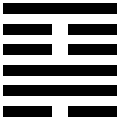
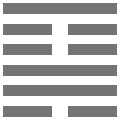

IDENTIDAD HEXAGRAMÁTICA
 Era el 29 de noviembre de 2018 cuando en uno de nuestros encuentros nos preguntamos cuál era la tarea que identifica al grupo dentro de la investigación “Eva sin Miedo”, y así es como al remontarse a nuestra fecha de nacimiento, 18 octubre 2018, fuimos a buscar el hexagrama correspondiente.
Así hemos descubierto que se corresponde al Hexagrama 39 del tablero del Ajedrez Oracular1, Gǔ “El Trabajo Inútil” "El Hacer Irremediable" y, en el I Ching, al Hexagrama18, Ku “El Trabajo en lo Echado a Perder”.
TABLERO DE AJEDREZ ORACULAR
 蠱 |
R11-VB2 IT1 - M13 |
TAG Isoleucina UAG Stop |
Como se ve en la imagen, al escaque número 39 le corresponde: un hexagrama, el ideograma correspondiente, cuatro resonadores, y dos secuencias de nucleótidos en el ADN y en el ARN.
Las secuencias de nucleótidos dan lugar –cada una- a un aminoácido, pero en este caso el ARN corresponde a una tripleta que no codifica un aminoácido sino un STOP. Por lo tanto, marca el final de algo, y esto es un dato interesante.
Salvo algunas excepciones, el núcleo celular es el hogar del ADN. El que copia y lleva fuera del núcleo se llama ARN.
Hay triples de ARN que dicen: “Copiar hasta aquí, STOP”. Este es nuestro caso, de hecho, el hexagrama coincide con una tripleta de ARN que no indica un aminoácido sino un STOP.
Interpretación:
En este hexagrama hay una codificación para dar una señal de alto, para terminar algo, para interrumpir algo.
Hemos dicho que en el I´Ching, el hexagrama es el número 18 y se traduce como: “El Trabajo en lo Echado a Perder” y que en el Tablero Oracular, el hexagrama es el número 39, cuya interpretación es: “El Trabajo Inútil” “El Hacer Irremediable”. Por tanto, ya tenemos tres elementos:
1. Hay una situación a la que hay que decir basta.
2. Hay un trabajo inútil.
3. Hay un hecho que implica enmendar2 algo que es inevitable, que es irremediable.
Hexagrama:
El hexagrama se compone de dos trigramas, uno inferior, Xùn –Sun-, “Lo Suave”, “El Viento”, y uno superior, Gèn –Ken-, “El Aquietamiento”, “La Montaña”.
☶ 艮 Gèn El Monte
☴ 巽 Xùn El Viento
La Montaña arriba, el Viento abajo, da una situación de desequilibrio, algo que debe ser enmendado, algo que debe ser recompuesto. Nos habla de un caos que debe ser reorganizado.
Podemos, como primer enfoque del hexagrama, decir que hay una situación que no está bien, hay una situación que está estropeada, hay un error implícito en la forma en que nos colocamos. Tenemos que enmendar y esto es irremediable, no se puede aplazar, hay que hacerlo.
Ideograma:
蠱Gǔ, el ideograma en la imagen es el tradicional.
Definiciones de Gǔ:
Trabajar en lo que se ha arruinado.
Un insecto venenoso legendario, 蠱惑, Gǔhuò.
Nombre de uno de los sesenta y cuatro hexagramas.
Cómo se compone el ideograma:
蟲 Chóng: error o insecto, gusano.
皿 Mǐn: tarro o recipiente.
Habla de un recipiente, algo que contiene gusanos, insectos o errores.
Interpretación:
“Gǔ” parece la estrategia utilizada por el poder que hace que las mujeres se enfrenten entre sí, que se coman entre sí, porque son poco fiables, venenosas. Hasta tal punto que hoy seguimos pensando, incluso las mujeres, que las mujeres entre ellas son más venenosas que los hombres.
Esto es "Gǔ", el gusano que cada uno de nosotros tiene dentro que nos hace pensar y ver de cierta manera, es un condicionamiento.
Pero debemos recordar que este insecto venenoso no es más que un error que se ha multiplicado tanto que se ha convertido en un gran error, el más venenoso. Un error que se come otro error y luego otro, y otro más, hasta convertirse en un gran error, un legendario error. Es como una cesta de manzanas con una manzana podrida, al final, si no quitamos esa marchita, todo lo que hay en la cesta se pudrirá.
El tarro, el recipiente, 皿,Mǐn, nos recuerda al útero. Como si el útero de la mujer, que es como un cáliz que acoge la idea de lo Divino, ha aceptado un error y ha llegado el momento de corregir ese error, de quitar lo que está mal.
Veamos ahora el ideograma de Gǔhuò, nombre del legendario insecto venenoso, cuyo significado es “seducir en la transgresión”.
蠱惑
Si dividimos el ideograma, en un lado tenemos a Gǔ y en el otro tenemos a Huó.
Para Huó tenemos, según tenga o no el ideograma de “corazón”, diferentes definiciones:
惑 Huò: 1. confundir; engañar; inducir a error.
2. Duda; sospecha
或 Huò
Tal vez; puede ser; probablemente.
(conj. ) O, o bien.
(pr. ) Alguien; cierta persona
Interpretación:
En la medida en que la duda entra en el corazón se pierde la certeza y se entra en el ámbito de la sospecha.
Cuando se contamina la convicción en la mujer de ser un ser de luz, con todos los recursos necesarios de ser la depositaria de la Creatividad del Cielo, es entonces cuando comienza un recorrido en la duda y en la sospecha.
Y aquí viene la definición de: “Seducir en la transgresión”.
¿Cuándo seduce la mujer? –seducción en los términos de la cultura en la que vivimos-, cuando no está segura por dentro. Una mujer segura de sí misma no necesita usar la seducción como arma, sólo necesita manifestarse.
Tenemos, pues, otra clave con respecto a la tarea que nos toca como grupo, y esa es enmendar el error, que no implica una acción violenta, enmendar el error no implica usar armas, implica limpiar.
1 Los 64 hexagramas del I Ching coinciden en número con los 64 escaques del tablero de ajedrez. Esta aparente coincidencia fue la “coincidencia” que llevó al autor del libro “El Ajedrez Oracular” –J. L. Padilla- a acercarse al tablero en su forma oracular.
2 Etimología de la palabra Enmendar: lat. ENMENDAR comp. de la partícula E y MENDA defecto, error. Corregir y purgar de los defectos, del error. Deriv. Multa; Enmienda: el Acto o el Efecto de la enmienda, y de manera especial lo que se hace para compensar el error cometido.